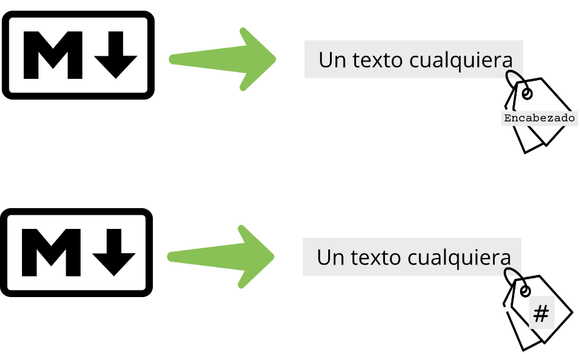
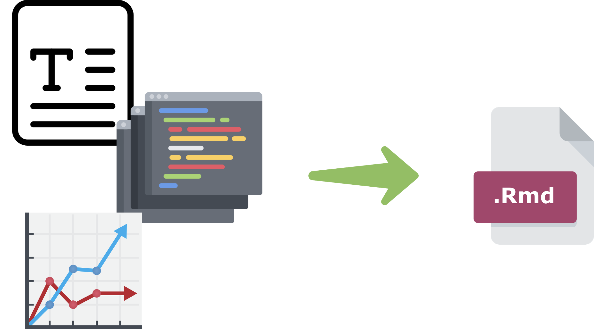
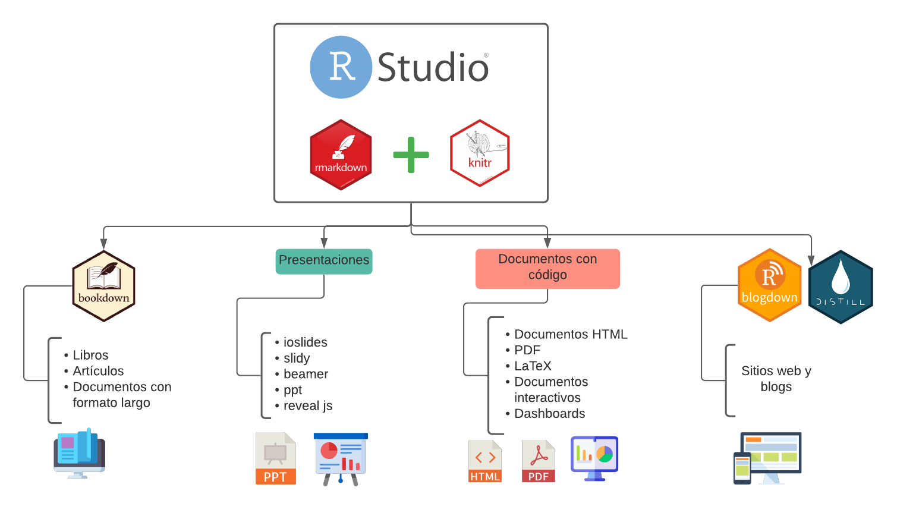
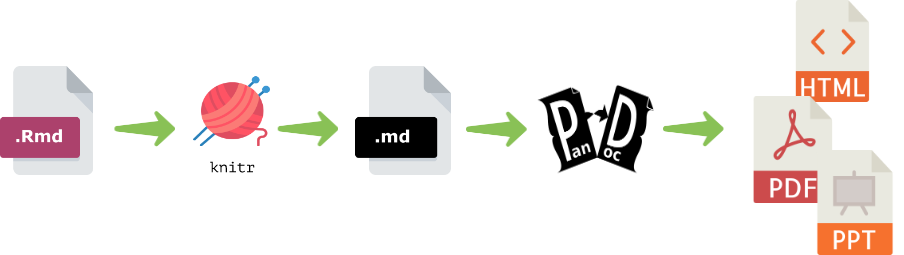

Capítulo 2 Introducción a la documentación
2.1 ¿Por qué documentar?
La documentación de código es un proceso importante para conservar la reproducibilidad de nuestros experimentos bioinformáticos. Al documentar código de manera correcta logramos dar mayor fiabilidad a nuestros resultados. Sin mencionar que es una buena práctica, pues también nos ayuda a comprender los proyectos que alguna vez debemos retomar en el futuro.
La documentación de código se lleva a cabo con un lenguaje de marcado como Markdown.
2.2 Markdown
Markdown es un lenguaje de marcado ligero que facilita la aplicación de formato a un texto, empleando una serie de caracteres especiales. Un lenguaje de marcado se encarga de colocar etiquetas a un texto a través de caracteres como numerlaes (#), guiones (-), acentos graves (`), etc.
knitr::include_graphics("img/markdown-sintaxis.png")
2.2.1 Ventajas de aprender Markdown
- Escribir es más rápido y cómodo. Dar formato a un txto largo es más simple porque se tiene más orden.
- Es fácil de leer, ya que solo hay texto y etiquetas (denotadas por caracteres especiales).
- Un archivo
.mdes un archivo de texto plato, lo que lo hace compatible con cualquier SO y ligero. - Todo es completamente gratuito.
2.3 R Markdown
R Markdown es un programa incluido en R Studio que permite generar informes con texto, segmento de código y gráficas, utilizando todas las paqueterías que R brinda a sus usuarios.
knitr::include_graphics("img/rmd.png")
Con R Markdown se pueden crear todo tipo de documentos como libros, presentaciones, archivos en HTML e incluso blogs y sitios web.
knitr::include_graphics("img/rmd_knitr.png")
2.3.1 ¿Cómo funciona?
Una vez generado un archivo .Rmd con código, gráficas y texto, interviene una paquetería llamada knitr la cual se encarga de “tejer” o compilar nuestro documento. knitr convierte el archivo .Rmd en un archivo .md para posteriormente ser procesado por pandoc, un convertidor de documentos universal, que transforma el archivo .md en lo el documento que queramos.
knitr::include_graphics("img/como_funciona.png")
2.3.2 Para saber más…
Para saber más sobre R Markdown se pueden consultar los siguientes recursos:
- La CheatSheet R Markdown
- El libro: R Markdown: The definitive Guide
- El libro: R Markdown Cookbook